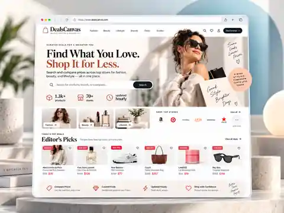

Reach Beyond Paid Media
Extend distribution through publishers, creators, affiliates, content partners, and other relevant channels.
NOAH connects partner distribution with owned commerce so brands can reach relevant audiences beyond paid media, create more discovery moments, and move demand closer to measurable commercial outcomes.
Performance media can create demand. The network extends that demand into new distribution and commerce channels. NOAH adds partner distribution and owned commerce so brands can reach relevant audiences in more environments and create additional paths from discovery to conversion.
Extend distribution through publishers, creators, affiliates, content partners, and other relevant channels.
Meet consumers through content, recommendations, partner audiences, and environments where discovery can influence action.
Use NOAH-owned commerce destinations to create direct paths from consumer interest to relevant products, offers, and shopping opportunities.
Feed partner and commerce signals into NOAH Intelligence so future decisions reflect what the network learns.
Once demand exists, NOAH extends it through publishers, creators, affiliates, content partners, and strategic distribution relationships. This gives relevant audiences more ways to discover, engage, and move toward commerce.
Align campaigns and commerce opportunities with partner channels suited to the audience and objective.
Create additional paths to discovery and conversion beyond traditional paid media.
Use partner activity and attribution signals to understand what is contributing to engagement and commercial outcomes.
NOAH-owned commerce destinations complement external media and partner reach with direct environments built around product discovery, offers, comparison, and shopping intent.
A commerce-discovery destination for fashion, beauty, and lifestyle products that helps shoppers explore offers and compare options across stores.
Visit DealsCanvas
A deal-discovery destination focused on coupons, cash back, daily offers, and timely shopping opportunities across brands and categories.
Visit CatchTheDeal.ai
For brands, the network creates more distribution and commerce pathways. For partners, it creates access to relevant brand, campaign, and commerce opportunities.
Add partner distribution and NOAH-owned commerce to create more ways for relevant audiences to discover and act.
Connect your audience and distribution capabilities with relevant brand campaigns and commerce opportunities across the NOAH ecosystem.
NOAH’s network approach includes partner-fit review, traffic-quality attention, brand-safety considerations, fraud-prevention practices, and ongoing monitoring so distribution can be managed with greater accountability.
Evaluate fit before program participation.
Pay attention to how distribution is generated.
Use controls that reduce invalid activity.
Consider context and partner suitability.
Review performance and quality as programs run.
Partner and commerce activity feed NOAH Intelligence so distribution performance can inform the next media, partner, commerce, and testing decision.
Whether you are a brand looking to extend distribution or a partner looking for relevant commercial opportunities, NOAH can help connect the right audiences, channels, and commerce pathways around the opportunity.